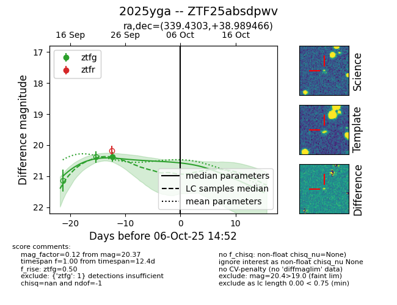
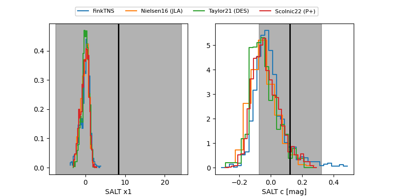

FINK: ZTF25absdpwv
Lasair: ZTF25absdpwv
ALeRCE: ZTF25absdpwv
TNS: 2025yga
YSE: 2025yga
ZTF25absdpwv (ztf,fink)
2025yga (tns,yse)
equatorial (ra, dec) = (339.4303,+38.98947)
galactic (l, b) = (96.3495,-16.88313)


last ztfg=20.37
1 ztfg detections